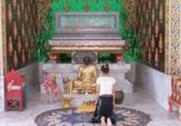

|
ประวัติพระกิตติมงคลพิพัฒน์
(หลวงพ่อจ้อย ฐิตปุญโญ) อดีตเจ้าอาวาสวัดเขาสุวรรณประดิษฐ์ และ อดีตเจ้าคณะอำเภอดอนสัก วัดเขาสุวรรณประดิษฐ์ ต.ดอนสัก อ.ดอนสัก จ.สุราษฎร์ธานี ****************** |
||||||||||||||||
|
ขอเกริ่นนำเพื่อทำความเข้าใจ.- เนื่องจากท่านเจ้าคุณ พระกิตติมงคลพิพัฒน์ เป็นพระอนุสาวนาจารย์ในการประกอบพิธีให้บรรพชาอุปสมบทแก่ พระเทพพิพัฒนาภรณ์ (ชูชาติ กนฺตวณฺโณ ป.ธ.๕,น.ธ.เอก) เจ้าอาวาสวัดท่าไทร และเจ้าคณะจังหวัดสุราษฎร์ธานี รูปปัจจุบัน (ในขณะนั้นท่านมีอายุ ๒๒ ปี เมื่อวันที่ ๑๑ เดือน กรกฏาคม พ.ศ. ๒๕๐๕ เวลา ๑๕.๓๕ น. ณ วัดเขาสุวรรณประดิษฐ์ ตำบลดอนสัก อำเภอดอนสัก จังหวัดสุราษฎร์ธานี) ข้าพเจ้าในฐานะที่เป็น Webmaster จึงขออนุญาตนำสังเขปประวัติของท่านเจ้าคุณ พระกิตติมงคลพิพัฒน์ มานำเสนอ เพื่อเป็นการประกาศเกียรติคุณ คุณงามความดี ผลงาน และน้อมบูชาดวงวิญญาณอันบริสุทธิ์ของพระเดชพระคุณหลวงพ่อฯ และเพื่อให้ทุกท่านได้มีโอกาสชื่นชมในบารมีธรรมของท่านอีกทางหนึ่งด้วย ขณะเดียวกัน ก็ขออนุโมทนาแก่ คุณบำรุง พันธุ์อุบล (หลานของหลวงพ่อจ้อย) ตำแหน่งผู้อำนวยการกลุ่มงาน คณะกรรมาธิการการศาสนา ศิลปะและวัฒนธรรม สำนักกรรมาธิการ ๓ สำนักงานเลขาธิการสภาผู้แทนราษฎร ที่ได้ให้ข้อมูลที่เป็นประโยชน์แก่ Webmaster และทำให้ข้อมูลมีความชัดเจนยิ่งขึ้น จึงขออนุโมนาเป็นอย่างยิ่งไว้ ณ ที่นี้ ผู้รวบรวมประวัติ ขออภัยเป็นอย่างสูงต่อทุกท่านที่ไม่สามารถนำข้อมูลและภาพประกอบมาเสนอแด่ท่านได้ทั้งหมด ซึ่งขณะนี้กำลังแสวงหาอยู่ เมื่อเราได้มาอย่างสมบูรณ์เมื่อใดแล้ว จะรีบนำลงในเว็บฯ เพื่อประกาศเกียรติคุณ และให้ทุกท่านได้รับทราบในโอกาสต่อไป หากท่านใดที่มีข้อมูล และภาพประกอบเพิ่มเติม และมีความประสงค์จะร่วมประกาศเกียรติคุณ บารมีธรรมหลวงพ่อจ้อยของพวกเรา ขอเชิญส่งไปที่ เว็บมาสเตอร์ E-mail : watthasai@gmail. com,songpak16@yahoo.com, fm107.25mhz@gmail.com จะขอบพระคุณเป็นอย่างสูงยิ่ง
ความเบื้องต้น.- ต่อมาได้รับการอุปสมบทเป็นครั้งที่ ๒ ซึ่งเป็นการบวชแก้บน ที่วัดดอนยาง หมู่ที่ ๗ ตำบลท่าทอง อำเภอกาญจนดิษฐ์ จังหวัดสุราษฎร์ธานี โดยมีพระอธิการเริ่ม ฐานิโย เป็นพระอุปัชฌาย์, พระครูประจักษ์วรคุณ เจ้าอาวาสวัดประสพ ตำบลท่าทอง อำเภอกาญจนดิษฐ์ เป็นพระกรรมวาจาจารย์, พระอธิการวัด วัดนทีวัฒนาราม ตำบลชลคราม เป็นพระอนุสาวนาจารย์ ได้รับฉายาว่า จิตปุญฺโญ
ท่านบวชเมื่อวันที่ ๑๐ ธันวาคม พ.ศ.๒๔๙๐
โดยท่านเล่าให้ศิษยานุศิษย์ฟังว่า ในระหว่างที่บวชอยู่นั้น ท่านคิดจะลาสิกขาถึง
๒ ครั้ง แต่ในที่สุดท่านได้พิจารณาเห็นว่าเมื่อได้หลีกออกจากเครื่องพันธนาการในเพศคฤหัสถ์แล้ว
ไม่สมควรที่จะวิ่งกลับเข้าไปหาเครื่องพันธนาการคือกิเลสตัณหาอีก จึงได้ตัดสินใจอยู่ครองสมณเพศ
บำเพ็ญประโยชน์ทั้งส่วนตน ส่วนพระพุทธศาสนา ส่วนสังคมและท้องถิ่นอย่างสมบูรณ์ตลอด
มานับว่าเป็นการเจริญตามรอยบาทพระศาสดาสัมมาสัมพุทธเจ้าในฐานะที่ท่านเป็นพระภิกษุสงฆ์ในบวรพระพุทธศาสนาอย่างแท้จริง
๑. ถนน ได้ดำเนินการตัดถนนสายต่าง ๆ ในอำเภอดอนสักหลายสาย โดยท่านเป็นผู้อำนวยการในการตัดถนน และประสานงานกับเจ้าของที่ดิน โดยไม่ต้องมีการเวนคืน เช่น ถนนสายดอนสัก - ขนอม ถนนสายดอนสัก - บ้านใน ถนนสายสวนมะพร้าว - ท้องอ่าว ฯลฯ ๒. การไฟฟ้า ท่านเป็นผู้ริเริ่มนำเครื่องปั่นไฟมาใช้ในบ้านดอนสัก และได้ประสานงานกับหน่วยงานและส่วนราชการต่าง ๆ จนในที่สุดมีไฟฟ้าใช้ทั่วทั้งสุขาภิบาลอำเภอดอนสัก ๓. การประปา ท่านได้ติดต่อประสานงานกับหน่วยเจาะบาดาล กระทรวงมหาดไทย ต่อมาได้รับพระมหากรุณาธิคุณจากพระบาทสมเด็จพระเจ้าอยู่หัวทรงรับสั่งให้ดำเนินการเรื่องน้ำหนักให้กับชาวดอนสัก จนทำให้ชาวดอนสักมีน้ำประปาใช้มาจนถึงปัจจุบันนี้ ๔. สิ่งก่อสร้างภายในวัด ได้แก่ สร้างกุฏิ จำนวน ๙ หลัง สร้างศาลาการเปรียญ จำนวน ๑ หลัง สร้างโรงเรียนพระปริยัติธรรม จำนวน ๑ หลัง สร้างหอฉัน จำนวน ๒ หลัง สร้างอุโบสถ จำนวน ๑ หลัง สร้างเมรุ จำนวน ๑ หลัง สร้างเจดีย์บรรจุพระบรมธาตุ สร้างอนุสาวรีย์ พระเจ้าวรวงศ์เธอ พระองค์เจ้าวิภาวดีรังสิต พระเจดีย์วัดเขาสุวรรณประดิษฐ์
สูงสง่างดงาม
ได้เป็นกรรมวาจาจารย์ให้แก่เจ้าคณะจังหวัดสุราษฎร์ธานี รูปปัจจุบัน.- หลวงพ่อจ้อย ท่านเป็นพระมหาเถระที่มีบุญบารมียิ่งใหญ่ มีศิษยานุศิษย์มากมายจนสุดที่จะคณานับได้หมด เป็นทั้งอุปัชฌาย์ ให้การบรรพชาอุปสมบทแก่กุลบุตรมากมาย และที่น่าสนใจอย่างยิ่งก็คือ ในวันที่ ๑๑ เดือน กรกฏาคม พ.ศ. ๒๕๐๕ เวลา ๑๕.๓๕ น. ณ วัดเขาสุวรรณประดิษฐ์ ตำบลดอนสัก อำเภอดอนสัก จังหวัดสุราษฎร์ธานี พระกิตติมงคลพิพัฒน์ (จ้อย ฐิตปุญโญ) ได้เป็นพระอนุสาวนาจารย์ในการประกอบพิธีให้บรรพชาอุปสมบทแก่กุลบุตรชื่อ ชูชาติ พัฒนเจริญ อายุ ๒๒ ปี ซึ่งเมื่อบวชแล้ว ได้รับฉายาว่า กนฺตวณฺโณ (สมณศักดิ์ปัจจุบันคือ พระเทพพิพัฒนากรณ์ เจ้าคณะจังหวัดสุราษฎร์ธานี และเจ้าอาวาสวัดท่าไทร) โดยมีพระอุปัชฌาย์ชื่อ พระครูดิตถารามคณาศัย (ชม คุณาราโม) วัดท่าไทร ตำบลท่าทองใหม่ อำเภอกาญจนดิษฐ์ จังหวัดสุราษฎร์ธานี, และมีพระกรรมวาจาจารย์ชื่อ พระครูประจักษ์วรคุณ วัดประสพ ตำบลท่าทอง อำเภอกาญจนดิษฐ์ จังหวัดสุราษฎร์ธานี
ท่านเจ้าคุณ " พระกิตติมงคลพิพัฒน์" ได้มรณภาพลงด้วยอาการอันสงบ ซึ่งเป็นธรรมชาติของสังขาร เมื่อวันที่ ๑๕ กุมภาพันธ์ พ.ศ.๒๕๓๖ อายุ ๘๙ ปี พรรษา ๔๖ ซึ่งคณะศิษยานุศิษย์ทุกระดับชั้น ข้าราชการ พ่อค้า ประชาชน ได้จัดบำพ็ญบุญกุศลถวายท่านอย่างยิ่งใหญ่ เพื่อเป็นการแสดงออกถึงความกตัญูกตเวที ความสำนึกมั่นในอุปการคุณและคุณูปการที่ท่านมอบไว้ให้เป็นมรดกแก่อนุชนรุ่นหลังอย่างมากมายเหลือที่จะพรรณนาให้หมดได้ ต่อมา คณะศิษยานุศิษย์ทั่วทุกสาระทิศ ได้ร่วมมือ ร่วมแรง ร่วมใจ ร่วมทุนกันจัดสร้าง "มณฑปหลวงพ่อจ้อย" ไว้เป็นอนุสรณ์สถาน เพื่อให้ทุกท่านได้สักการะบูชาที่ "วัดเขาสุวรรณประดิษฐ์" ต.ดอนสัก อ.ดอนสัก จ.สุราษฎร์ธานี เพื่อเป็นที่ยึดเหนี่ยวจิตใจในอันที่จะสรรค์สร้างคุณงามความดี เจริญรอยตามจริยาอันดีงามของท่าน ซึ่งปัจจุบันมีศิษญานุศิษย์ ข้าราชการ พ่อค้า และประชนหลั่งไหลมาจากทั่วทุกสาระทิศมาสักการะบูชาอยู่ทุกวัน จนแทบจะกล่าวได้ว่า "กลิ่นธูป แสงเทียน ไม่เคยขาดหายไปจากมณฑปหลวงพ่อจ้อย" อย่างแท้จริง
ปัจจุบันนี้ ถึงแม้ว่าร่างกายของท่านเจ้าคุณพระกิตติมงคลพิพัฒน์
(จ้อย ฐิตปุญฺญ มหาเภระ) จะได้มรณภาพไปแล้วตามธรรมชาติของสังขาร แต่คุณงามความดี
บารมีธรรม ผลงานที่ท่านได้สร้างไว้ให้เป็นมรดกของชาวดอนสัก ชาวสุราษฎร์ธานี
ของชาวพุทธทั่วทั้งโลกทั้งหมดนั้น ล้วนแล้วแต่ยังคงจารึกมั่นอยู่ในความทรงจำ
ในจิตใจ ของประชาชนชาวสุราษฎร์ธานี และของชาวพุทธทั้งโลกอย่างไม่มีวันเสื่อมคลาย
 ************************ |
||||||||||||||||
|
|
||||||||||||||||